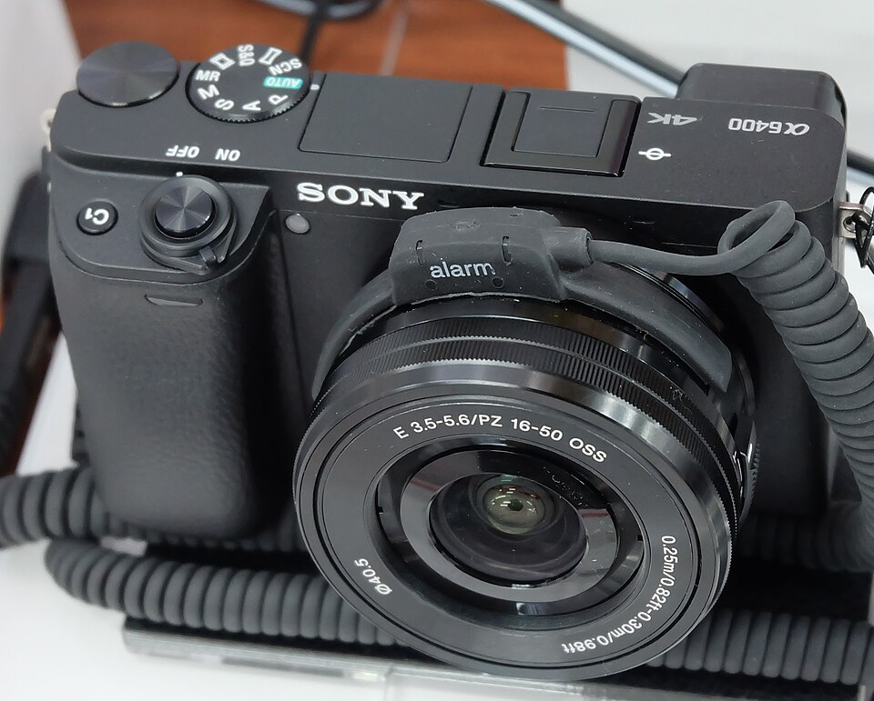
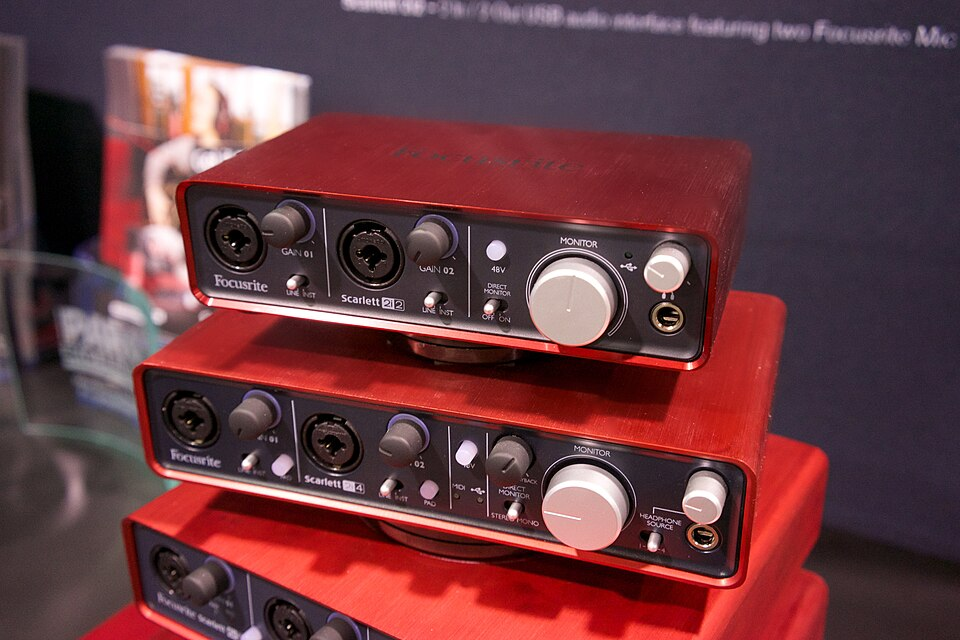
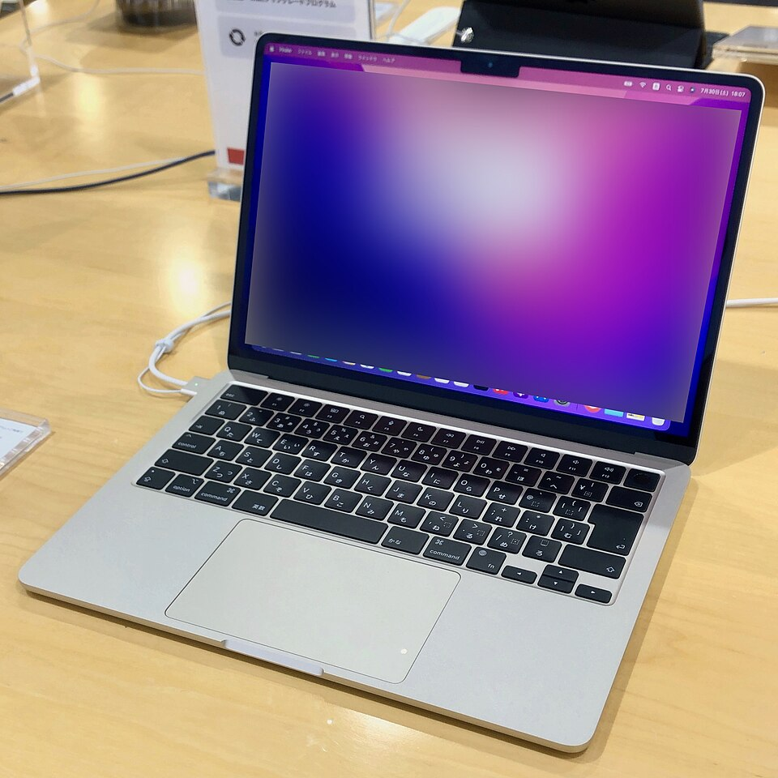
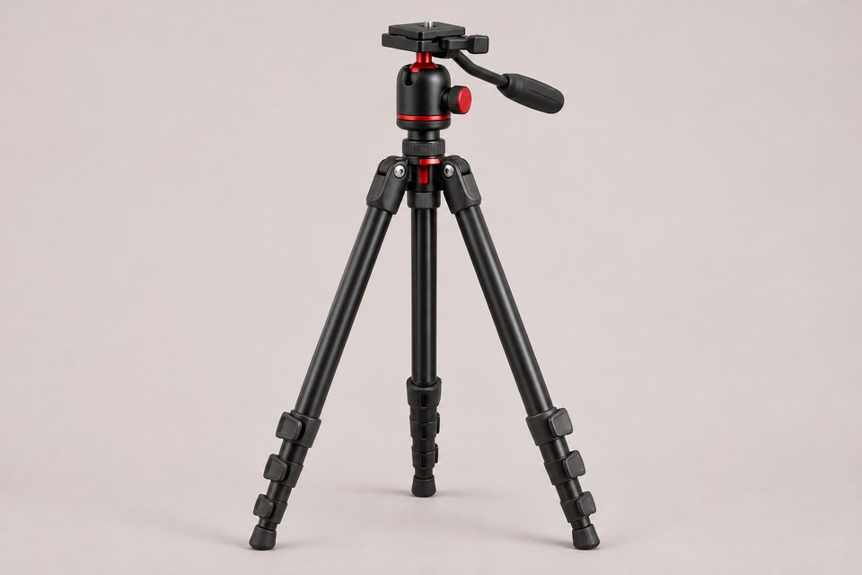
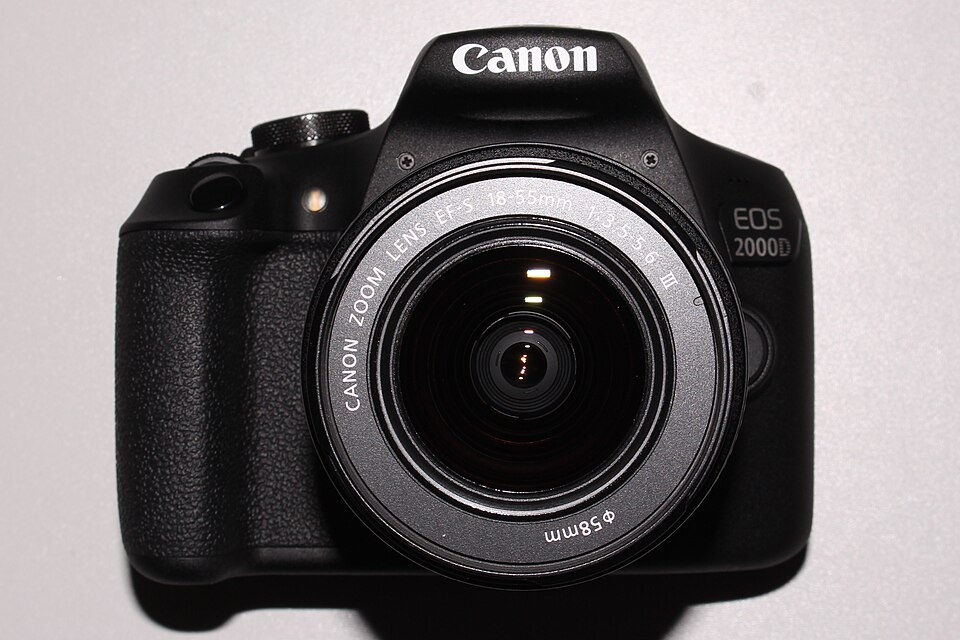
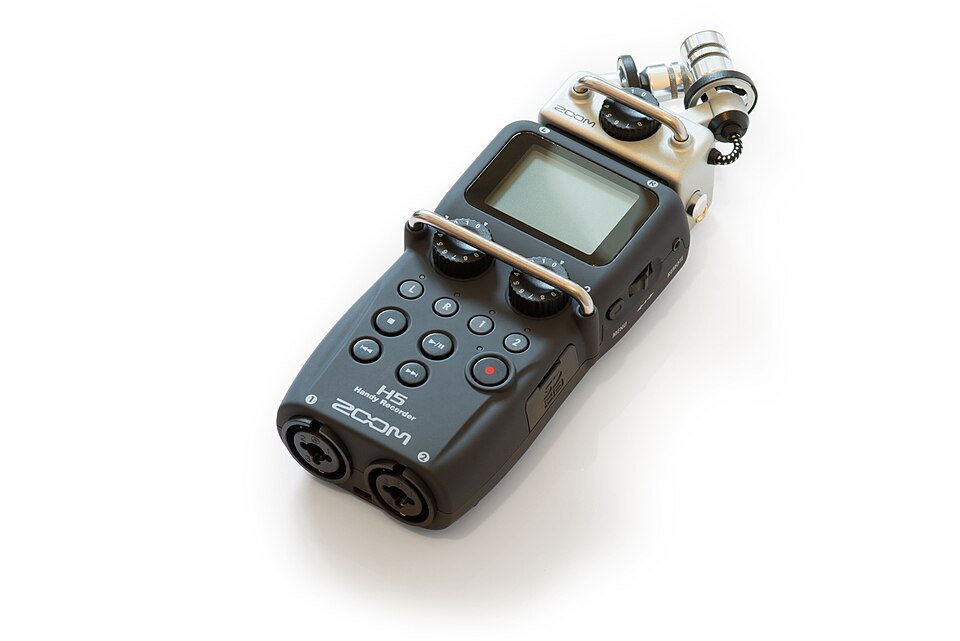
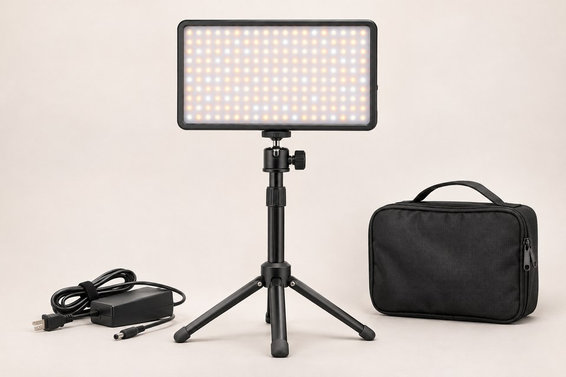

Sony Alpha A6400
Sony Alpha a6400 camera with lens
Photo: 昼落ち · CC BY-SA 4.0
Original and attribution details

Downloaded Wikimedia thumbnail; no pixel edits. Displayed to fit the card without cropping.
Photos are reference images, not photographs of the college's inventory. Model variants, condition and kit accessories can differ. Each image's source and license or generation note appears with its entry; inclusion does not imply endorsement.

Sony Alpha a6400 camera with lens
Photo: 昼落ち · CC BY-SA 4.0
Original and attribution details
Downloaded Wikimedia thumbnail; no pixel edits. Displayed to fit the card without cropping.

Audio-Technica AT2020 condenser microphone
Photo: Lokal_Profil · CC BY-SA 4.0
Original and attribution details
Downloaded Wikimedia thumbnail; no pixel edits. Displayed to fit the card without cropping.

Focusrite Scarlett interface lineup with the 2i2 at the top
Photo: Matt Vanacoro · CC BY 2.0
Original and attribution details
Downloaded Wikimedia thumbnail; no pixel edits. Displayed to fit the card without cropping.

M2 MacBook Air in Starlight
Photo: KKPCW（Kyu3） · CC BY-SA 4.0
Original and attribution details
Downloaded Wikimedia thumbnail; no pixel edits. Displayed to fit the card without cropping.

Illustrative generic compact camera tripod; the specific model may differ.
Generated for the CampusKit demo using OpenAI image generation. This is an illustration, not a photograph of campus inventory.

Canon EOS 2000D camera with lens, also sold as the Rebel T7
Photo: Aciarium · CC BY-SA 4.0
Original and attribution details
Downloaded Wikimedia thumbnail; no pixel edits. Displayed to fit the card without cropping.

Zoom H5 handheld recorder
Photo: SkywalkerPL · CC BY 4.0
Original and attribution details
Downloaded Wikimedia thumbnail; no pixel edits. Displayed to fit the card without cropping.

Illustrative generic LED video light panel with stand, cable, and carrying case; exact model and kit contents may differ.
Generated for the CampusKit demo using OpenAI image generation. This is an illustration, not a photograph of campus inventory.

.jpg){kind=link}